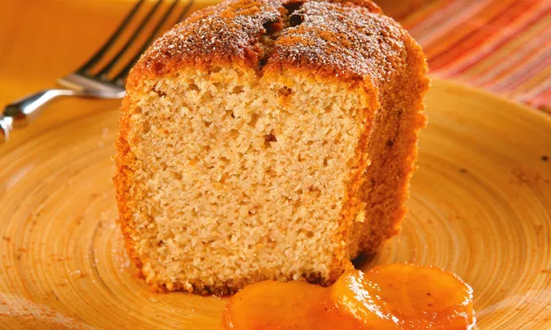

Bolo de banana
O seguinte layout de site faz referência a: https://claudia.abril.com.br/receitas/bolo-de-banana/
Ingredientes

Foto bacana de um bolo
- 4 bananas-nanica
- 4 ovos
- 2 1/2 xícaras (chá) de açúcar
- 2 1/2 xícara (chá) de farinha de rosca
- 1 colher (sopa) de fermento químico em pó
- 1/2 colher (sopa) de canela em pó para polvilhar
Modo de preparo
Bata todos os ingredientes no liquidificador, exceto a farinha e o fermento. Despeje a mistura numa tigela e adicione os ingredientes restantes, mexendo bem. Unte uma forma com 20 cm de diâmetro, de buraco no meio, e polvilhe o açúcar e a canela. Leve ao forno, preaquecido, em temperatura média (170 °C a 190 °C), por 40 minutos ou até que, ao enfiar um palito na massa, ele saia limpo. Depois de frio, desenforme e, se quiser, sirva com rodelas de banana carameladas.
Informações nutricionais
Categoria
Bolo
Origens geográficas
Mexicana